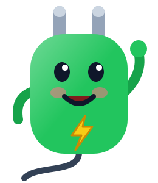

Eu digo-te onde está o posto. O resto fica com os vizinhos.I tell you where the charger is. The neighbours handle the rest.
Quanto vai custar a carga? Que tarifário te sai mais barato? O que diz a lei sobre a tomada na garagem do prédio? Cada pergunta tem o seu site, feito pela mesma comunidade, com o código aberto no GitHub.
What will the charge cost? Which tariff works out cheapest? What does the law say about a socket in your building's garage? Each question has its own site, made by the same community, with its code open on GitHub.

Espetei um pino em cada vizinho.I stuck a pin in every neighbour.
-

ocarroeletrico.com
O Carro Elétrico
A mobilidade elétrica em Portugal explicada a quem conduz: carregar em casa e na rua, condomínio, instalação, apoios e impostos. Cada facto com a lei e a fonte.
Electric mobility in Portugal explained for drivers: charging at home and on the road, condos, installation, grants and tax. Every fact with the law and its source.
-

ohmigo.ocarroeletrico.com
ohmigo
Pergunta ao ChatGPT ou ao Claude quanto custa carregar e onde fica mais barato. O ohmigo conhece os preços de todos os postos públicos do país, dentro e fora da rede MOBI.E.
Ask ChatGPT or Claude what a charge costs and where it's cheapest. ohmigo knows the prices of every public charger in the country, on the MOBI.E network and off it.
-

voltaria.ocarroeletrico.com
Voltaria
O conhecimento por trás dos outros: a lei, as normas e as regras da mobilidade elétrica em Portugal, escritas para assistentes de IA. Cada facto com a sua fonte.
The knowledge behind the others: the law, the standards and the rules of electric mobility in Portugal, written for AI assistants. Every fact with its source.
-

ceme.ocarroeletrico.com
Comparador CEMECEME comparator
Compara os tarifários de quem te vende a energia na rede MOBI.E. Faz as contas com as tarifas de acesso às redes, o preço do mercado ibérico e os impostos, à hora a que carregas.
Compares the tariffs of whoever sells you the energy on the MOBI.E network. It does the maths with the grid access tariffs, the Iberian market price and the taxes, at the hour you charge.
-
nap.ocarroeletrico.com
Postos PT
Todos os postos públicos que o Ponto de Acesso Nacional publica. Procura perto de ti, vê o estado ao vivo, as estatísticas da rede e os erros nos dados.
Every public charger the National Access Point publishes. Search near you, see the live status, the network's statistics and the errors in the data.
Estás aquiYou are here Código no GitHubCode on GitHub
-
olhaoposto.ocarroeletrico.com
olh'o'posto
Fotos dos postos e das tomadas, tiradas pela comunidade. Cada posto tem um link que nunca muda, pelo ID oficial, para qualquer app ou mapa mostrar como é o posto antes de lá chegares.
Photos of chargers and their sockets, taken by the community. Every charger has a link that never changes, by its official ID, so any app or map can show what it looks like before you get there.
-

panoramax.ocarroeletrico.com
Panoramax
Onde ficam guardadas as fotos do olh'o'posto, com o mapa e o visualizador. É um servidor Panoramax, o software livre de fotos de rua que o OpenStreetMap usa, montado só para postos de carregamento.
Where olh'o'posto's photos are stored, with the map and the viewer. It's a Panoramax server, the free street-photo software OpenStreetMap uses, set up for charging stations only.
-

ohm-age.ocarroeletrico.com
AmpereArchive
Guarda a história dos postos. Lê o NAP a cada minuto e arquiva o que mudou, porque o NAP só mostra o presente. É daqui que o ohmigo tira o estado ao vivo e o Postos PT o histórico.
Keeps the chargers' history. It reads the NAP every minute and archives what changed, because the NAP only shows the present. ohmigo gets its live status from here, and Postos PT its history.
Não tem página para visitar: é um arquivo de dados que os outros leem.There's no page to visit: it's a data archive the others read.